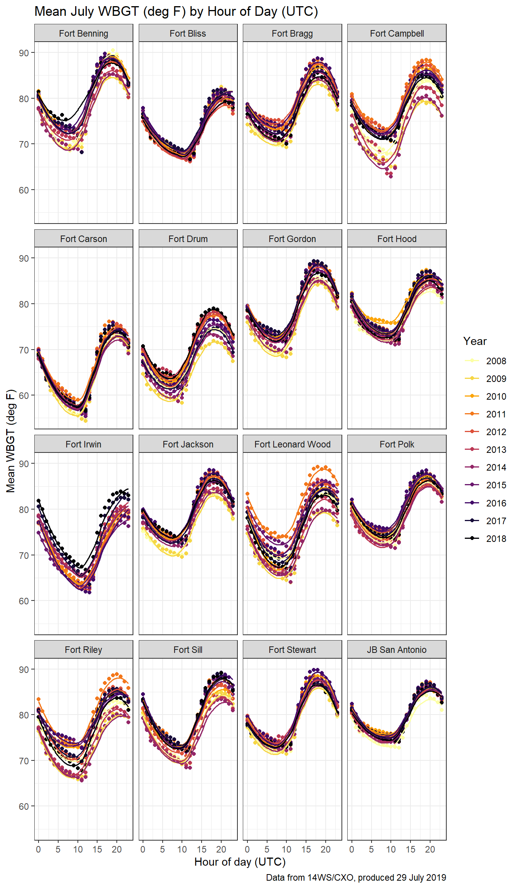

af_weather
Air Force SAR weather
This code includes reads in and combines separate Excel worksheets into a single dataframe.
The hourly data were produced in July 2019 by 14WS and provide WBGT, HI, RH, temperature (F), dew point (F) and UTCI (F).
Note: For Fort Irwin, Daegu, Hawaii, Yongsan, Red Cloud files, need to insert row prior to line 25 so that header starts on line 26.
# sar_file <- "D:/sar_weather/SAR_9860_Aberdeen Proving Ground.csv"
#
sar_file_list <- list.files(path = "D:/sar_weather", pattern = "^.*\\.(csv)$") %>%
paste0("D:/sar_weather/", .)
sar_file_list %>% head()
read_sar <- function(input_file) {
read_csv((input_file), col_names = TRUE, skip = 25, na = c("", "NA")) %>%
janitor::clean_names() %>%
mutate(location = stringr::str_split((input_file), "9860_") %>% .[[1]] %>% .[2] %>%
str_split(., ".csv") %>% .[[1]] %>% .[1],
time = paste0(hour, ":", "00", ":", "00"),
date = paste(year, month, day, sep = "-"),
dttm = paste(date, time, sep = " ") %>%
flipTime::AsDateTime()) %>%
dplyr::select(-c(year, month, day, hour, time, date)) %>%
dplyr::select(location, dttm, everything()) %>%
rename(wbgt = wet_bulb_globe_temp,
rh = relitive_humidity)
}
sar_df <- furrr::future_map_dfr(sar_file_list, read_sar, .progress = TRUE)
sar_df <- sar_df %>% select(-c(x11, x12, x13))
sar_dfSave file and filter locations
# save dataframe to .csv file
# save as .rds
# write_csv(sar_df, "D:/sar_df.csv", append = FALSE)
# sar_df <- read_csv("D:/sar_weather/sar_df.csv")
sar_df <- sar_df %>%
filter(location %in% c("Fort Benning", "Fort Bragg","Fort Campbell",
"Fort Jackson", "Fort Polk", "Fort Hood",
"Fort Stewart", "Fort Leonard Wood", "Fort Riley",
"Fort Irwin", "Fort Bliss", "Fort Lewis",
"Fort Sill", "Fort Carson", "Fort Gordon",
"Fort Drum", "JB San Antonio")
)
# write_rds(sar_df, path = "data/sar_df.rds")sar_df <- read_rds("data/sar_df.rds")
sar_df## # A tibble: 1,506,584 x 8
## location dttm wbgt heat_index rh temp_f dewp_f utci_f
## <chr> <dttm> <dbl> <dbl> <dbl> <dbl> <dbl> <dbl>
## 1 Fort Benning 2008-01-01 00:00:00 NA NA 100 46.4 46.4 51.6
## 2 Fort Benning 2008-01-01 01:00:00 44.2 44.6 93.3 44.6 42.8 37.9
## 3 Fort Benning 2008-01-01 02:00:00 NA 41 100 41 41 46.4
## 4 Fort Benning 2008-01-01 03:00:00 40.6 41 93.2 41 39.2 46.2
## 5 Fort Benning 2008-01-01 04:00:00 NA 37.4 100 37.4 37.4 42.8
## 6 Fort Benning 2008-01-01 05:00:00 NA 37.4 100 37.4 37.4 35.8
## 7 Fort Benning 2008-01-01 06:00:00 NA 35.6 100 35.6 35.6 33.8
## 8 Fort Benning 2008-01-01 07:00:00 NA 35.6 100 35.6 35.6 30.1
## 9 Fort Benning 2008-01-01 08:00:00 35.2 35.6 93.0 35.6 33.8 40.8
## 10 Fort Benning 2008-01-01 09:00:00 35.2 35.6 93.0 35.6 33.8 29.9
## # ... with 1,506,574 more rows# Location counts
sar_df %>%
count(location) %>%
head() %>%
knitr::kable() %>%
kable_styling(bootstrap_options = c("striped", "condensed", full_width = FALSE))| location | n |
|---|---|
| Fort Benning | 95702 |
| Fort Bliss | 96087 |
| Fort Bragg | 94556 |
| Fort Campbell | 95912 |
| Fort Carson | 95281 |
| Fort Drum | 95643 |
Hour of day mean WBGT
# Plot July hourly WBGT
sar_df %>%
filter(months(dttm) == "July") %>%
group_by(location, lubridate::year(dttm), lubridate::hour(dttm)) %>%
summarise(mean_wbgt = mean(wbgt, na.rm = TRUE)) %>%
rename(year = `lubridate::year(dttm)`,
hour = `lubridate::hour(dttm)`) %>%
ggplot(aes(x = hour, y = mean_wbgt, color = factor(year))) +
geom_point() +
geom_smooth(aes(group = factor(year)), size = 0.6, se = FALSE) +
facet_wrap(~location) +
labs(
title = "Mean July WBGT (deg F) by Hour of Day (UTC)",
x = "Hour of day (UTC)",
y = "Mean WBGT (deg F)",
caption = "Data from 14WS/CXO, produced 29 July 2019") +
theme_bw() +
viridis::scale_color_viridis(
name = "Year",
discrete = TRUE,
direction = -1,
option = "inferno") ## `geom_smooth()` using method = 'loess' and formula 'y ~ x'
Yearly mean temperature boxplots
# Locations 1 - 12
sar_df %>%
dplyr::select(location, dttm, temp_f) %>%
mutate(location = as_factor(location),
year = as.factor(lubridate::year(dttm))) %>%
filter(as.numeric(location) > 2) %>%
filter(as.numeric(location) <= 11) %>%
group_by(location, lubridate::year(dttm)) %>%
ggplot(aes(x = year,
y = temp_f)) +
geom_boxplot() +
facet_wrap(~location, ncol = 3) +
labs(
title = "Yearly mean temperatures (deg F)",
x = "Year",
y = "Temperature (deg F)",
caption = "Data from 14WS/CXO, produced 29 July 2019") +
theme_bw() +
theme(axis.text.x = element_text(angle = 45, size = 6, hjust = 1))## Warning: Removed 882 rows containing non-finite values (stat_boxplot).
Compare with NLDAS-2 temperature and heat indices
nldas_wide <- read_rds("data/nldas_wide.rds")
nldas_wide## # A tibble: 6,472,525 x 19
## utc_dttm local_dttm installation longitude latitude TMP
## <dttm> <dttm> <chr> <dbl> <dbl> <dbl>
## 1 1990-01-01 00:00:00 1989-12-31 18:00:00 eglin_afb -86.5 30.6 291.
## 2 1990-01-01 01:00:00 1989-12-31 19:00:00 eglin_afb -86.5 30.6 290.
## 3 1990-01-01 02:00:00 1989-12-31 20:00:00 eglin_afb -86.5 30.6 289.
## 4 1990-01-01 03:00:00 1989-12-31 21:00:00 eglin_afb -86.5 30.6 288.
## 5 1990-01-01 04:00:00 1989-12-31 22:00:00 eglin_afb -86.5 30.6 287.
## 6 1990-01-01 05:00:00 1989-12-31 23:00:00 eglin_afb -86.5 30.6 287.
## 7 1990-01-01 06:00:00 1990-01-01 00:00:00 eglin_afb -86.5 30.6 286.
## 8 1990-01-01 07:00:00 1990-01-01 01:00:00 eglin_afb -86.5 30.6 285.
## 9 1990-01-01 08:00:00 1990-01-01 02:00:00 eglin_afb -86.5 30.6 284.
## 10 1990-01-01 09:00:00 1990-01-01 03:00:00 eglin_afb -86.5 30.6 283.
## # ... with 6,472,515 more rows, and 13 more variables: SPFH <dbl>, PRES <dbl>,
## # UGRD <dbl>, VGRD <dbl>, DSWRF <dbl>, windspeed <dbl>, tmp_f <dbl>,
## # tmp_c <dbl>, rh <dbl>, dp_c <dbl>, heat_index <dbl>, wbgt <dbl>,
## # wbgt_f <dbl>af_nldas_compare <-
sar_df %>%
mutate(location =
str_to_lower(location, locale = "en"),
location = str_replace_all(location, " ", "_"),
location = recode(location, fort_benning = "fort_benning_ga", fort_irwin = "ntc_and_fort_irwin")) %>%
left_join(nldas_wide, by = c("location" = "installation", "dttm" = "utc_dttm")) %>%
dplyr::select(location, dttm, wbgt.x, heat_index.x, temp_f, wbgt_f, heat_index.y, tmp_f) %>%
rename(installation = location,
utc_dttm = dttm,
wbgt_af = wbgt.x,
heat_index_af = heat_index.x,
temp_af = temp_f,
wbgt_nldas = wbgt_f,
heat_index_nldas = heat_index.y,
tmp_nldas = tmp_f)
af_nldas_compare ## # A tibble: 1,506,584 x 8
## installation utc_dttm wbgt_af heat_index_af temp_af wbgt_nldas
## <chr> <dttm> <dbl> <dbl> <dbl> <dbl>
## 1 fort_bennin~ 2008-01-01 00:00:00 NA NA 46.4 46.4
## 2 fort_bennin~ 2008-01-01 01:00:00 44.2 44.6 44.6 46.3
## 3 fort_bennin~ 2008-01-01 02:00:00 NA 41 41 46.2
## 4 fort_bennin~ 2008-01-01 03:00:00 40.6 41 41 46.1
## 5 fort_bennin~ 2008-01-01 04:00:00 NA 37.4 37.4 45.2
## 6 fort_bennin~ 2008-01-01 05:00:00 NA 37.4 37.4 44.4
## 7 fort_bennin~ 2008-01-01 06:00:00 NA 35.6 35.6 43.5
## 8 fort_bennin~ 2008-01-01 07:00:00 NA 35.6 35.6 42.8
## 9 fort_bennin~ 2008-01-01 08:00:00 35.2 35.6 35.6 42.1
## 10 fort_bennin~ 2008-01-01 09:00:00 35.2 35.6 35.6 41.4
## # ... with 1,506,574 more rows, and 2 more variables: heat_index_nldas <dbl>,
## # tmp_nldas <dbl>Plots
af_nldas_compare %>%
dplyr::select(installation, utc_dttm, temp_af, tmp_nldas) %>%
na.omit() %>%
ggplot(aes(x = temp_af, y = tmp_nldas)) +
geom_point(alpha = 0.2) +
geom_smooth(method = lm, se = FALSE) +
facet_wrap(~installation, ncol = 3) +
labs(
title = "Temperature Comparison",
x = "Air Force Station",
y = "NLDAS") +
theme_bw()af_nldas_compare %>%
dplyr::select(installation, utc_dttm, wbgt_af, wbgt_nldas) %>%
na.omit() %>%
ggplot(aes(x = wbgt_af, y = wbgt_nldas)) +
geom_point(alpha = 0.2) +
geom_smooth(method = lm, se = FALSE) +
facet_wrap(~installation, ncol = 3) +
labs(
title = "WBGT Comparison",
x = "Air Force Station",
y = "NLDAS") +
theme_bw()
Statistical comparison: t-tests
# https://cran.r-project.org/web/packages/BlandAltmanLeh/vignettes/Intro.html
# WBGT
af_nldas_compare %>%
dplyr::select(installation, utc_dttm, wbgt_af, wbgt_nldas) %>%
na.omit() %>%
group_by(installation) %>%
do(tidy(t.test(.$wbgt_af,
.$wbgt_nldas,
mu = 0,
alt = "two.sided",
paired = TRUE,
conf.level = 0.99))) %>%
knitr::kable() %>%
kable_styling(bootstrap_options = c("striped", "condensed", full_width = FALSE))| installation | estimate | statistic | p.value | parameter | conf.low | conf.high | method | alternative |
|---|---|---|---|---|---|---|---|---|
| fort_benning_ga | -0.6702483 | -58.96990 | 0 | 78899 | -0.6995257 | -0.6409709 | Paired t-test | two.sided |
| fort_bliss | 8.0954079 | 214.48241 | 0 | 95921 | 7.9981841 | 8.1926318 | Paired t-test | two.sided |
| fort_bragg | 3.4376121 | 128.29688 | 0 | 89697 | 3.3685933 | 3.5066308 | Paired t-test | two.sided |
| fort_campbell | 2.0341558 | 48.41562 | 0 | 84390 | 1.9259313 | 2.1423803 | Paired t-test | two.sided |
| fort_carson | -10.2892864 | -459.56059 | 0 | 93593 | -10.3469588 | -10.2316139 | Paired t-test | two.sided |
| fort_drum | -20.6642521 | -507.98556 | 0 | 85549 | -20.7690362 | -20.5594681 | Paired t-test | two.sided |
| fort_gordon | -2.1268538 | -64.49253 | 0 | 90730 | -2.2118020 | -2.0419055 | Paired t-test | two.sided |
| fort_hood | 1.1571740 | 33.42653 | 0 | 91415 | 1.0680010 | 1.2463470 | Paired t-test | two.sided |
| fort_jackson | 9.1797385 | 235.66439 | 0 | 93674 | 9.0794012 | 9.2800757 | Paired t-test | two.sided |
| fort_leonard_wood | 6.0787829 | 176.20692 | 0 | 80948 | 5.9899199 | 6.1676459 | Paired t-test | two.sided |
| fort_polk | 9.3001094 | 264.68089 | 0 | 92896 | 9.2096004 | 9.3906183 | Paired t-test | two.sided |
| fort_riley | 2.6965890 | 57.52345 | 0 | 85294 | 2.5758364 | 2.8173417 | Paired t-test | two.sided |
| fort_sill | -2.6378249 | -67.74694 | 0 | 88171 | -2.7381207 | -2.5375291 | Paired t-test | two.sided |
| fort_stewart | 6.0299376 | 161.11832 | 0 | 83751 | 5.9335336 | 6.1263415 | Paired t-test | two.sided |
| ntc_and_fort_irwin | -3.8770869 | -87.75927 | 0 | 75401 | -3.9908865 | -3.7632874 | Paired t-test | two.sided |
# Temperature
af_nldas_compare %>%
dplyr::select(installation, utc_dttm, temp_af, tmp_nldas) %>%
na.omit() %>%
group_by(installation) %>%
do(tidy(t.test(.$temp_af,
.$tmp_nldas,
mu = 0,
alt = "two.sided",
paired = TRUE,
conf.level = 0.99))) %>%
knitr::kable() %>%
kable_styling(bootstrap_options = c("striped", "condensed", full_width = FALSE))| installation | estimate | statistic | p.value | parameter | conf.low | conf.high | method | alternative |
|---|---|---|---|---|---|---|---|---|
| fort_benning_ga | -2.8032488 | -181.170220 | 0.0000000 | 95658 | -2.8431055 | -2.7633922 | Paired t-test | two.sided |
| fort_bliss | 16.5302192 | 392.373623 | 0.0000000 | 96077 | 16.4217005 | 16.6387379 | Paired t-test | two.sided |
| fort_bragg | 3.4154461 | 119.038825 | 0.0000000 | 94436 | 3.3415392 | 3.4893529 | Paired t-test | two.sided |
| fort_campbell | -4.4731272 | -108.017501 | 0.0000000 | 95893 | -4.5797973 | -4.3664571 | Paired t-test | two.sided |
| fort_carson | -15.1729836 | -497.804479 | 0.0000000 | 95207 | -15.2514959 | -15.0944712 | Paired t-test | two.sided |
| fort_drum | -21.6116945 | -539.231302 | 0.0000000 | 95510 | -21.7149324 | -21.5084565 | Paired t-test | two.sided |
| fort_gordon | -5.7649785 | -162.172761 | 0.0000000 | 95803 | -5.8565469 | -5.6734101 | Paired t-test | two.sided |
| fort_hood | 2.2188586 | 61.988321 | 0.0000000 | 95727 | 2.1266555 | 2.3110617 | Paired t-test | two.sided |
| fort_jackson | 8.4018749 | 192.717847 | 0.0000000 | 95937 | 8.2895748 | 8.5141749 | Paired t-test | two.sided |
| fort_leonard_wood | 1.1800453 | 34.249658 | 0.0000000 | 94515 | 1.0912953 | 1.2687953 | Paired t-test | two.sided |
| fort_polk | -0.0962028 | -2.366705 | 0.0179492 | 95412 | -0.2009083 | 0.0085027 | Paired t-test | two.sided |
| fort_riley | 4.7730180 | 97.030341 | 0.0000000 | 94855 | 4.6463079 | 4.8997282 | Paired t-test | two.sided |
| fort_sill | -1.3877979 | -34.286917 | 0.0000000 | 94385 | -1.4920593 | -1.2835364 | Paired t-test | two.sided |
| fort_stewart | 2.2627548 | 52.518978 | 0.0000000 | 93847 | 2.1517742 | 2.3737354 | Paired t-test | two.sided |
| ntc_and_fort_irwin | 4.3929019 | 92.549892 | 0.0000000 | 75598 | 4.2706365 | 4.5151673 | Paired t-test | two.sided |